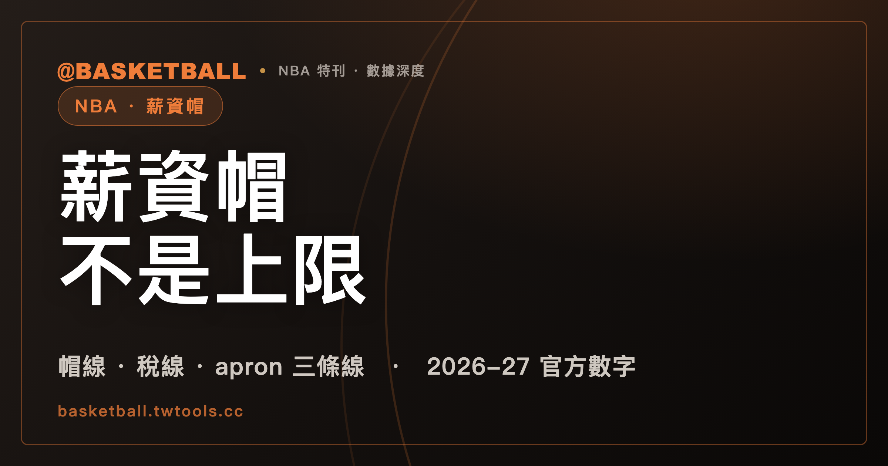

球隊薪資能超過薪資帽：帽線、稅線、apron 三條線各管不同的事
NBA 球隊的薪資可以超過薪資帽（Salary Cap）：依 2023 NBA CBA，帽線本身受規則與例外條款約束。稅線（Tax Level）決定誰要繳稅，第一、第二 apron 則把特定的簽約與交易操作綁上薪資條件，三條線管的事各不相同。

新手村｜制度入門・薪資帽
第一次認真看 NBA 的交易與簽約新聞，很快會碰到三個詞：薪資帽（Salary Cap）、稅線（Tax Level）、apron。三個詞都指一條薪資線，容易被當成同一件事的三種說法。
同一份公告就看得出不對勁。NBA 官方 2026 年 6 月 30 日的新聞稿寫明，2026-27 賽季的薪資帽是 $164.961 million，第二 apron（Second Apron Level）是 $221.686 million。兩者相差 $56.725 million。如果薪資帽真的是花錢上限，球隊薪資為什麼還有一條比它高出這麼多的線？
這篇只主張一件事：薪資帽不是 NBA 球隊花錢的上限。超過帽線靠例外條款合法，超過稅線要繳稅，超過 apron 則是失去某些特定的補強管道。三條線管的事各不相同。讀完之後，你可以拿官方公告的數字，自己判一支假設球隊落在哪一段、會碰到什麼限制。
本文只談 NBA，規則出處是 2023 年 6 月版的 NBA 集體勞動協議（下稱 2023 NBA CBA），金額出處是 NBA 官方 2025-26 與 2026-27 兩份薪資帽新聞稿。
球隊薪資超過薪資帽，為什麼不違規？
因為 2023 NBA CBA 給薪資帽下的定義，本身就帶著但書：Salary Cap 是每支球隊在每個 Salary Cap Year 的 Team Salary 上限，但要受協議所訂規則與例外條款約束。
協議接著用整整一節列出例外。那一節開頭寫明，以下是「球隊的 Team Salary 不得超過 Salary Cap」這條規則的例外。
第一個例外很直白：球隊可以在既有合約承諾的範圍內超過帽線。前提是那些合約簽訂時符合 CBA，或簽於協議生效前並符合當時的規則。
簽約類的例外也在同一節。Mid-Level Exception 是其中一類，依球隊的薪資水位分成三種。NBA 官方 2026 年 6 月 30 日的新聞稿列出 2026-27 賽季的數字：
| Mid-Level Exception（2026-27） | 金額 |
|---|---|
| Non-Taxpayer Mid-Level | $15.044 million |
| Taxpayer Mid-Level | $6.064 million |
| 有薪資帽空間球隊的 Mid-Level | $9.366 million |
球迷習慣把這種帽線稱為「軟帽」（soft cap），把稅線之上的稅稱為「奢侈稅」（luxury tax）。這兩個都是慣用說法，不是規則書用語。2023 NBA CBA 全文沒有「soft cap」這個詞，用的是 Salary Cap、Tax、Tax Level 與 Apron Level。讀官方文件時，認這幾個英文字比認慣稱可靠。
所以帽線管的是一般情況下的簽約規則，例外條款開出的路，可以讓球隊薪資高過帽線。接下來的兩條線，處理的是薪資高過帽線之後的事。
（規則出處：2023 NBA CBA Art. I 定義、Art. VII 第 6 節；金額出處：NBA 官方 2026 年 6 月 30 日新聞稿。）
稅線在帽線上方，超過的球隊要繳稅
依 2023 NBA CBA，稅線是薪資帽的 121.5%。下表是兩份官方新聞稿公告的數字，單位是 million 美元。
| 線 | 2025-26（新聞稿：2025 年 6 月 30 日） | 2026-27（新聞稿：2026 年 6 月 30 日） |
|---|---|---|
| 薪資帽（Salary Cap） | $154.647 million | $164.961 million |
| 稅線（Tax Level） | $187.895 million | $200.428 million |
| 第一 apron（First Apron Level） | $195.945 million | $209.015 million |
| 第二 apron（Second Apron Level） | $207.824 million | $221.686 million |
先自己算一次：2026-27 的帽線 $164.961 million 乘以 1.215，約是 $200.43 million，和公告的稅線 $200.428 million 一致。
三條線的金額每年會變。依 2023 NBA CBA，稅線是當年帽線的 121.5%，第一 apron 也用當年帽線與 2023-24 帽線的比例逐年推算，所以帽線調整時，這幾條線一起動。上表只收兩個賽季的官方數字。
稅的規則寫在這幾句裡。只有 Tax Team Salary 超過稅線的球隊，才要向 NBA 繳稅。稅額看的是超出的部分，不是全部薪資。Tax Team Salary 以該年度例行賽末場開賽時的 Team Salary 為基準，另有加減項。所以稅線看的是一個時點。
稅線是課稅門檻，不是不准超過的線。球隊薪資超過它，結果是多繳一筆稅。
（規則出處：2023 NBA CBA Art. VII 第 2 節；金額出處：NBA 官方 2025 年 6 月 30 日與 2026 年 6 月 30 日新聞稿。）
假設超過稅線 $15 million，稅是 $24 million
稅不是超線多少就繳多少，而是分級計算。2023 NBA CBA 自己附了一個算例，設定是 2025-26 賽季、Standard 稅率。算例假設每一級的金額（Tax Bracket Amount）是 $6 million，假設球隊超出稅線 $15 million。
稅是 $24 million：$6 million 乘 $1.00，加 $6 million 乘 $1.25，再加 $3 million 乘 $3.50。自己驗算一次：6 加 7.5 加 10.5，等於 24。
這是 CBA 的假設算例，不是任何一支球隊的實際帳單。
兩組稅率的第一級，差距很大。依 2023 NBA CBA，自 2025-26 賽季起：
- Standard 稅率的第一級，是超出的每 $1 課 $1.00。
- 前四個 Salary Cap Year 之中，有三年以上 Tax Team Salary 超過稅線的球隊，改用 Repeater 稅率，第一級是超出的每 $1 課 $3.00。
再用假設數字練一次。假設某隊在 2025-26 只超出稅線 $2 million，並且落在第一級之內。Standard 稅率的稅是 $2 million，Repeater 稅率的稅是 $6 million。同樣的超線金額，稅可以差到三倍。
（規則出處：2023 NBA CBA Art. VII 第 2(d)(2) 條，含算例；稅率自 2025-26 起適用。）
稅款分給球隊的部分，CBA 條文的上限是一半
超稅球隊繳的錢去哪裡，是新手容易想像過頭的地方。有人以為稅金會全額平分給沒有超稅的球隊。
2023 NBA CBA 只寫了兩件事。第一，NBA 可以選擇把至多 50% 的稅款分給一支或多支球隊，依據包含「該隊該年度沒有欠稅」這類條件。第二，沒有依這一款分出去的部分，由 NBA 選定的 League purposes 使用。
「可以選擇」是授權，不是義務。條文談的是機制，沒有談任何一個賽季實際分了多少。
（規則出處：2023 NBA CBA Art. VII 第 2(d)(4) 條。）
超過 apron 不等於不能簽約，限制綁在表列的特定操作上
apron 這個字在 CBA 裡叫 Apron Level，第一、第二各一條。中文沒有規則書層級的統一譯名，所以這篇一律寫英文原詞。
apron 不是一條「超過就什麼都不能做」的線。2023 NBA CBA Art. VII 第 2(e) 條有一張 Transaction Restrictions Table，列出受限制的操作，每一列對應第一或第二 apron。限制的寫法有兩層：
- 表列的操作做完之後，球隊的 Apron Team Salary 如果會超過該列對應的 apron 線，就不得做這項操作。
- 做過表列操作的球隊，那個 Salary Cap Year 剩下的時間，Apron Team Salary 也不得高於那條線。
限制只點名表裡的操作，不是所有簽約、所有交易。下表收錄表中的七列，不是完整的表：
| 表列 | 操作 | 對應的線 |
|---|---|---|
| A | 用 Bi-annual Exception 簽人或接手球員 | 第一 apron |
| B | 用 Non-Taxpayer Mid-Level 簽人或接手球員 | 第一 apron |
| C | 以 sign-and-trade 合約接手球員 | 第一 apron |
| E | 用 Expanded Traded Player Exception 接手球員 | 第一 apron |
| H | 用 Aggregated Standard Traded Player Exception（多名球員薪資合併換人）接手球員 | 第二 apron |
| I | 在交易中付現金給他隊 | 第二 apron |
| K | 用 Taxpayer Mid-Level 簽人 | 第二 apron |
表裡的 E 至 J 列還有一層賽後規則：賽季結束之後、該 Salary Cap Year 結束之前，這幾列的操作要改用「下一個 Salary Cap Year」的 Apron Team Salary 對照 apron 線。上表的 E、H、I 落在這個範圍。這條延伸只限 E 至 J 列，不適用於全部操作。
Taxpayer Mid-Level 是個有意思的例子。它只有在球隊使用後，Apron Team Salary 超過第一 apron 時才可以用。用了之後，表列 K 又要求球隊不得超過第二 apron。兩句合起來讀，使用它的球隊，簽完後的薪資落在第一與第二 apron 之間。
另外兩條相關規定：
- 自 2024-25 起，球隊如果在某個 Salary Cap Year 用 Taxpayer Mid-Level 簽過球員，同一年不得做表中 A 至 F 列的操作（本文表格只收其中 A、B、C、E 四列）。
- 用 Traded Player Exception 的交易，如果交易後的 Apron Team Salary 超過第一 apron，原本允許的 $250,000 額外額度降為 $0。
所以超過 apron 失去的，是表列上某幾種補強管道。管道換成別的，球隊仍然可以付薪水。
（規則出處：2023 NBA CBA Art. VII 第 2(e) 條與第 6 節；本文表格不含表中其餘各列。）
第二 apron 球隊被限制的是特定年份的首輪選秀權，不是全部選秀權
第二 apron 另外多一條限制，和選秀權有關。2023 NBA CBA 先定義了 Second Apron Team：某個 Salary Cap Year 的例行賽末場開賽時，Apron Team Salary 超過第二 apron 的球隊。
這個定義看的是一個時點。賽季中途薪資一度超過第二 apron，不等於球隊被算成 Second Apron Team。新聞說的「目前超過第二 apron」，和 CBA 定義的 Second Apron Team，是兩件事。
自 2024-25 起，Second Apron Team 被禁止交易一張特定的首輪選秀權：以該年度所屬賽季為起點，往後數第七個賽季結束後，第一次選秀的首輪選秀權。限制的是一個年份的首輪籤，不是所有選秀權。
再往下一層是 Draft Pick Penalty。依 2023 NBA CBA，其後四年內有兩年以上是 Second Apron Team，那張首輪籤會變成首輪的末位。
想先了解選秀順位怎麼決定，可以看本站的選秀樂透基礎。
（規則出處：2023 NBA CBA Art. VII 第 2(f) 條。）
用 2026-27 的線，自己判三支假設球隊
下面三支球隊都是假設的。每一列的數字，是假設球隊簽約後的 Apron Team Salary。先自己判，再看答案。線的數字用 NBA 官方 2026 年 6 月 30 日新聞稿：稅線 $200.428 million、第一 apron $209.015 million、第二 apron $221.686 million。
判斷只用前面講過的兩條 apron 規則：Non-Taxpayer Mid-Level 對應第一 apron，Taxpayer Mid-Level 要在第一 apron 之上、第二 apron 之下。例外本身還有其他條件，這裡不討論。
| 假設球隊 | 簽約後 Apron Team Salary | 用 Non-Taxpayer Mid-Level（表列 B） | 用 Taxpayer Mid-Level（表列 K） |
|---|---|---|---|
| 甲 | $205 million | 沒被 apron 規則擋下：沒超過 $209.015 million | 不行：沒超過第一 apron |
| 乙 | $212 million | 不行：超過第一 apron | 兩條檢查都通過：超過第一 apron，沒超過第二 apron |
| 丙 | $225 million | 不行：超過第一 apron | 不行：超過第二 apron $221.686 million |
三隊還有一條稅的問題。假設三隊的 Tax Team Salary 也是同一個數字，並且就是例行賽末場開賽時的水位，那麼三隊都高於稅線 $200.428 million，超出的金額分別是 $4.572 million、$11.572 million、$24.572 million。稅要不要繳、繳多少，和 apron 那兩欄各自獨立算。
同一支球隊，可以在稅線上要繳稅，在第一 apron 下沒被擋。三條線就是這樣各管各的。
台灣兩個職業聯盟的薪資規定不在本文範圍，想看 TPBL 與 P. LEAGUE+ 的規章比較，可以先看本站的兩聯盟規則比較，裡面有薪資相關的條文。要認識 NBA 聯盟與球隊，可以搭配本站的 NBA 聯盟指南。
常見問題
NBA 的薪資帽是不能超過的硬性上限嗎？
不是。依 2023 NBA CBA，Salary Cap 是每隊每個 Salary Cap Year 的 Team Salary 上限，但受協議規則與例外條款約束，Art. VII 第 6 節列出可超過帽線的例外，例如球隊可以在既有合約承諾的範圍內超過帽線。「軟帽」是球迷慣稱，CBA 全文沒有這個詞。
超過稅線要繳多少稅？
依 2023 NBA CBA，只有 Tax Team Salary 超過稅線的球隊要繳稅，對超出的部分分級計算。自 2025-26 起，Standard 稅率第一級是每 $1 課 $1.00；前四個 Salary Cap Year 有三年以上超過稅線的球隊，改用 Repeater 稅率，第一級是每 $1 課 $3.00。CBA 的假設算例是超出 $15 million、稅 $24 million，不是實際球隊的帳單。Tax Team Salary 以該年度例行賽末場開賽時的 Team Salary 為基準，另有加減項。
超過第一或第二 apron，就不能簽約、不能交易嗎？
不是全面禁止。依 2023 NBA CBA Art. VII 第 2(e) 條，限制的對象是 Transaction Restrictions Table 上列出的特定操作：操作後 Apron Team Salary 如果會超過該列對應的 apron 線就不得做，做過之後，該 Salary Cap Year 剩下的時間也不得高於那條線。表中 E 至 J 列在賽季結束後，另要對照下一個 Salary Cap Year。本文表格只收表中七列，不是完整的表。
第二 apron 球隊會失去選秀權嗎？
不是失去全部選秀權。依 2023 NBA CBA Art. VII 第 2(f) 條，Second Apron Team 是某個 Salary Cap Year 例行賽末場開賽時 Apron Team Salary 超過第二 apron 的球隊。自 2024-25 起，這類球隊被禁止交易一張特定年份的首輪選秀權；其後四年內有兩年以上是 Second Apron Team 的話，那張首輪籤變成首輪的末位。
資料來源
- 2023 NBA Collective Bargaining Agreement（NBA 官方檔案，2023 年 6 月版）：Art. I 定義；Art. VII 第 2 節（薪資帽、稅線、apron、稅率、稅款去向、交易限制表、Second Apron Team）、第 6 節（例外條款）。ak-static.cms.nba.com/2023-NBA-Collective-Ba…
- NBA 官方新聞稿，2025-26 賽季薪資帽公告（2025 年 6 月 30 日）。nba.com/nba-salary-cap-set-202…
- NBA 官方新聞稿，2026-27 賽季薪資帽公告（2026 年 6 月 30 日）。nba.com/nba-salary-cap-2026-27…
- 「軟帽」「奢侈稅」為球迷慣稱，非規則書用語；apron、Mid-Level Exception 等詞以 CBA 英文原文為準。